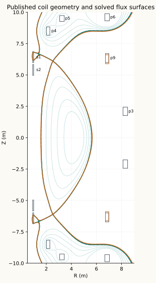
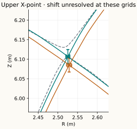
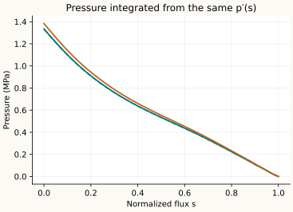

Core-flux RMSE against the reference.
Preset limit: 1%.
OPENSTEP-001 · EQUILIBRIUM BENCHMARK · 20 NOV 2026
From a drawing
to a solved magnetic field.
Reproduce a published tokamak equilibrium. Move one mirrored pair of coils. Solve again, and measure the difference.
UKAEA’s STEP design simulation supplies the coils, currents and plasma profiles. This historical benchmark tests static equilibrium. OPENSTEP-002 adds numerical, stability, confinement, heat and engineering screens; physical feasibility remains unresolved.
Magnetic axis moves outward when both p9 coil packs move 10 cm toward the midplane.
The calculated shift is smaller than the combined observed grid variation.

The field, with physical units
Fourteen coil packs, seven circuit currents and a plasma source that is recomputed during the solve. All coil currents and pressure/current profile functions are fixed across the comparison.
Published Fiesta referenceRecomputed baselineTranslated p9 coils



What changed
| Observable | Baseline | Modified | Interpretation |
|---|---|---|---|
| Plasma current | 22.7744 MA | 23.0169 MA | +1.06% · resolved against grid variation |
| Enclosed core volume | 710.4686 m³ | 713.0132 m³ | +0.36% · resolved against grid variation |
| On-axis pressure | 1.3353 MPa | 1.3839 MPa | +3.64% · resolved against grid variation |
| Magnetic-axis radius | 4.3897 m | 4.4057 m | +1.60 cm · resolved against grid variation |
| Upper X-point height | 6.1067 m | 6.0849 m | -2.17 cm · UNRESOLVED |
Values use the 257 × 513 grid. Effects marked resolved exceed the sum of the two arms’ observed medium-to-fine changes. This is a numerical screening rule, not a rigorous error bound.
What the benchmark establishes
The reference equilibrium is reproduced with a free plasma boundary, explicit coil fields and SI units. Both the baseline and modified arm converge on the 129 × 257 and 257 × 513 grids. The 65 × 129 runs fail to converge and remain in the record.
The mirrored 10 cm movement is a chosen interpretation of TriSphere’s hourglass motif. No magnetic law is derived from the thirteen/five layer counts. The earlier radial and inventory simulators remain separate models.
Source conventions and solver checks
The NetCDF file declares IMAS Data Dictionary 4.0.0 / COCOS 17, although the upstream README describes DD3 / COCOS 11. Checks against native Fiesta data establish the flux sign and 2π conversion. The scored calculation uses Newton–Krylov iteration, refined critical points and a cell-area treatment of the separatrix.
Frozen criteria, failures and replay
The numerical thresholds were recorded before solving. Solver development was adaptive; unsuccessful iterations and a corrected array-mutation bug are documented. Final residuals are checked independently after each solve.
Protocol · Development attempts · Coil inputs · Source hashes